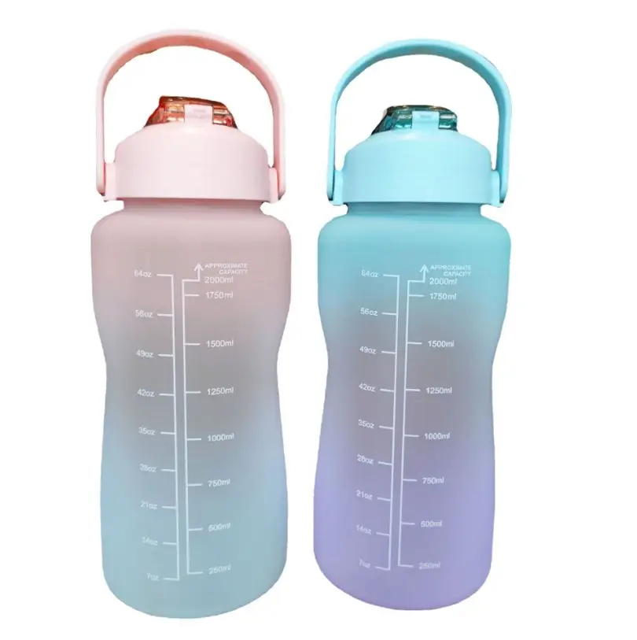

In this guide
For two decades, "SEO" meant climbing to the blue link at the top of page one. That game is changing. A large and growing share of searches — widely estimated at roughly half or more, especially on mobile — now end without the user clicking any link, because the answer is shown directly on the results page or inside an AI-generated response. For a manufacturer whose buyers research on Google and then ask ChatGPT what to buy, the goal is no longer just a high rank. It is to be the extracted answer. Featured snippets are the training ground for exactly that.
1. What a featured snippet is
A featured snippet is the box Google renders above the traditional #1 organic result to answer the query directly. It is pulled from a third-party page (not written by Google) and shown with attribution. There are four presentation formats, and each maps to a different kind of question:
- Paragraph — a direct definitional or explanatory answer ("what is…", "how does…").
- Table — comparative or spec data ("MOQ by product type", "capacity tiers").
- List — steps or items ("how to vet a factory", "steps to private label").
- Video — a timestamped clip answering the query.

2. Why it matters in a zero-click world
When a search ends without a click, the only winner is the source Google (or an AI engine) chose to display. For a manufacturer, that source is either you or a competitor. Three reasons this is now core to B2B visibility:
- Top-of-funnel capture. Importers often start with a generic question ("what MOQ for custom bottles?"). The snippet owns that moment.
- Brand framing. Being the cited answer positions you as the knowledgeable factory, not a faceless listing.
- AI reuse. The text Google snippets is exactly the kind of clean, attributed answer that ChatGPT, Perplexity and Gemini lift. Snippet wins are a leading indicator of AI citations.
3. The four snippet formats
Match the format to the intent. Trying to win a "compare" query with a paragraph will fail; use a table. The table below is the working map:
| Format | Best for query type | Example for a factory | AI-engine affinity |
|---|---|---|---|
| Paragraph | Definitions, "what/how" | "What is drinkware MOQ?" | High — easiest to quote verbatim |
| Table | Compare, specs, tiers | "MOQ by product type" | High — structured, citable |
| List | Steps, checklists | "How to vet a factory" | Medium–High |
| Video | How-to, demo | "How vacuum insulation is tested" | Medium |

4. The snippet → AI citation bridge
This is the part most manufacturers miss. The skills that win a Google snippet are the same skills that earn a ChatGPT or Perplexity citation:
- State the answer in plain, factual prose near the question headline.
- Use real numbers and named standards (AQL 2.5, LFGB, 95°C retention test).
- Structure comparisons as tables, not paragraphs.
- Mark up the page with FAQ, Product and Organization schema so machines parse it (see our schema cookbook).
When an AI engine assembles an answer, it preferentially pulls from pages that already demonstrate this clarity. A page holding a paragraph or table snippet has, in effect, passed Google's own "is this a clean extractable answer" test — which is precisely what AI engines look for. Snippet optimization and GEO optimization are not two strategies; they are the same discipline viewed from two engines.
5. How to structure content to win
The repeatable recipe we use across our own guides:
- Lead with the question as an H2/H3 phrased exactly how a buyer would search it.
- Put the answer first. The paragraph right under the headline should be the standalone answer — 40–60 words, no "in this article we will" fluff.
- Add the depth below. Explain, give the table, add the caveats after the extractable answer.
- Use one clear table wherever the question is comparative.
- Mark it up. FAQPage and the relevant entity schema tell engines this is a structured answer.
6. Format-by-format tactics
| Format | Tactic that wins it | Common mistake |
|---|---|---|
| Paragraph | Answer in first 40–60 words right under the H2; use exact-match phrasing | Burying the answer three paragraphs down |
| Table | Clean <table> with a header row; keep it narrow (3–5 columns) | Pasting data as an image (not parseable) |
| List | Ordered list for steps, unordered for items; each item self-contained | Vague bullets ("good service", "quality") |
| Video | Accurate title + transcript; target the timestamp | No captions or description |

7. Measuring snippet wins
You cannot improve what you don't track. A lightweight weekly routine:
- Build a target-question list (20–40 queries) in a spreadsheet, one row each.
- Manually check whether your page holds the snippet each week; note position changes.
- Cross-check Search Console for impressions on those queries and any zero-position data.
- Run the same questions through ChatGPT, Perplexity and Gemini and record whether you're cited (our measuring-GEO guide has the prompt tracker).
Over a quarter, snippet hold-rate and AI citation rate should move together. If snippets rise but citations don't, your content is clear but not yet trusted — that is an E-E-A-T problem (see our E-E-A-T guide), solved by stronger author/entity signals and external mentions.
8. FAQ
What is a featured snippet?
A featured snippet is the box Google pulls above the normal #1 organic result to directly answer a search. It can be a paragraph, a table, a bulleted or numbered list, or a video. Winning it puts your wording at the very top of the results page — and that same wording is what AI answer engines frequently lift into their responses.
Do featured snippets help with AI citations (GEO)?
Yes. The content Google deems snippet-worthy — concise, factual, well-structured answers — is the same content AI engines prefer to quote. A page that wins a paragraph or table snippet has usually already done the structuring work AI engines reward, so snippet optimization and GEO optimization reinforce each other.
How long should the snippet answer be?
For a paragraph snippet, aim for roughly 40–60 words (about 250–310 characters) immediately after the question headline. That length is long enough to be useful and short enough to be lifted whole. Tables and lists can be longer because they are rendered as structured blocks, not extracted prose.
Can a manufacturer track featured-snippet wins?
Yes. Track a fixed weekly list of target questions in a spreadsheet, manually check whether your page holds the snippet, and corroborate with Google Search Console's 'Position' and any zero-position impressions. Pair this with a prompt tracker in ChatGPT/Perplexity/Gemini, as covered in our measuring-GEO guide.
Want a snippet & AI-citation audit of your site?
Send us your site URL, your main products and target markets. We'll review which questions you could own in the answer box and in ChatGPT/Perplexity/Gemini, and show you the content gaps — typically within one business day.
SSMug is the drinkware brand of Yongkang STWADD Houseware Co., Ltd., a factory-based manufacturer. We apply this same question-first, table-rich, schema-marked-up structure across our own sourcing guides — which is why they earn both search snippets and AI citations rather than sitting unseen.
Talk to us about getting your factory cited by AI
No forms, no waiting. One email and you'll be talking to our team about turning your product knowledge into answer-box and AI-engine visibility — typically within one business day.